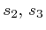
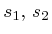

Next: polarizer Up: List of Functions Previous: dop_meter
Sets the average State Of Polarization of the transmitted signal.
[EX,EY]=SET_SOP(EX,EY,ANG1,ANG2)
[EX,EY]=SET_SOP(EX,EY,ANG1,ANG2,ANGTYPE)
[EX,EY,MAT]=SET_SOP(EX,EY,ANG1,ANG2)
[EX,EY]=SET_SOP(EX,EY,ANG1,ANG2,RTYPE)
[EX,EY]=SET_SOP(EX,EY,ANG1,ANG2) sets the State Of Polarization
(SOP) of the electric field having x component EX and y component
EY. EX and EY are column vectors (see mz_modulator).
ANG1, ANG2 are the azimuth and ellipticity [rad]
of the output SOP, respectively.
[EX,EY]=SET_SOP(EX,EY,ANG1,ANG2,ANGTYPE) specifies
ANG1 and ANG2 according to ANGTYPE. Available
options are:
An ideal polarization division multiplexed signal (PDM) signal before
SET_SOP lies in the plane (
), because the
X polarization carries the same power as the Y polarization. Calling:
[EX,EY]=SET_SOP(EX,EY,pi/2,pi/4)
let it lie in the plane ( ) . See Section 3.2.1 for more information about the signals Poincarè description.
Optilux toolbox reference manual